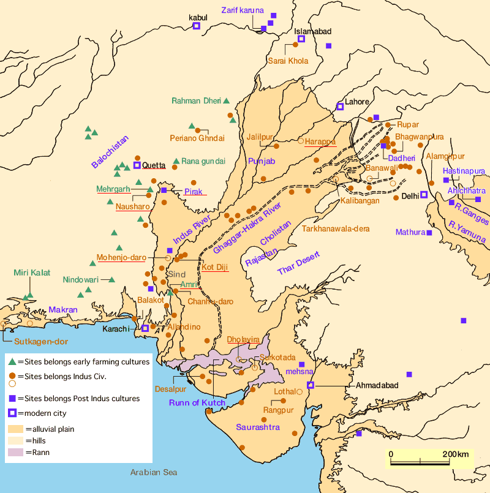

The Indus Valley civilization, also known as the Harappan culture, was one of the three oldest Bronze Age civilizations. It spreads from northeast Afghanistan to Pakistan and northwest India. It lasted from 3300-1300 BCE and the height of the civilization lasted from 2600-1600 BCE. It flourished near the basins of the Indus River which flows mostly through Pakistan and flows slightly into India. It was also highly advanced and made many advances in agriculture.
The Indus Valley civilization had some of the first major urban centers in the world. Some of them included Mohenjo-Daro, Harappa and Rakhigarhi. These major cities were usually located in warm climates near rivers for agriculture. This is why most cities in this civilization were near the Indus River.
The Indus Valley civilization made many advancements technology which allowed for a large urban population. The inventions included:
Many houses show evidence of having toilets, which was very advanced for the time. Large bathing complexes were found in every city, such as the great bath of Mohenjo-Daro. They also knew of urban planning. These are all necessary for a successful city.
They also created an advanced system of measuring length, mass and time. Masters of metallurgy, they produced copper, bronze, lead, and tin. The Indus Valley civilization were also masters of architecture and engineering, especially in building dock. They were also had knowledge of biology, with archaeologists finding evidence of early dentistry.
Originally it was thought that there was an Aryan invasion, who are people from central Asia. This theory, which was proposed by Sir Mortimer Wheeler, states that the Aryans attacked the Indus Valley Civilization, but the proof was not sufficient. The most probable cause of the decline was probably climate change and drought which heavily affected the agricultural society. The lack of monsoons dried up rivers and since they did not have irrigation capabilities they could not have sustainable agriculture. There was also a decline of trade between Mesopotamia and Egypt which also caused the collapse.